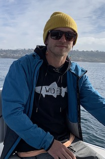

WHOAMI
Greetings, my name is William and I am from the northern regions of California, but now reside in San Diego. I grew up skiing and it has given me many injuries. I spent some time in academia and discovered an amoeba in a volcano, for which I was awarded a Masters degree, which you can seeHERE. Previously I was working with boats, where I taught people how to navigate the tumultuous seas of Southern California and Mexico. I try and surf when I can and play with my dog,Eisley. I want to become a web developer to help people experience and explore the World Wide Web in fun, informative and interactive ways.